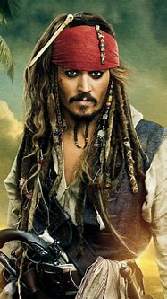
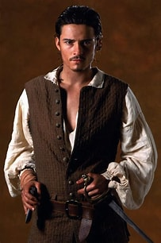

Cast
-

Johnny Depp - Captain Jack Sparrow
Johnny Depp is an acclaimed actor known for his versatile roles. In Pirates of the Caribbean, he brings the eccentric and cunning Captain Jack Sparrow to life.
-
Keira Knightley - Elizabeth Swann
Keira Knightley portrays Elizabeth Swann, a strong-willed governor's daughter who finds herself entangled in a world of piracy and adventure.
-

Orlando Bloom - Will Turner
Orlando Bloom takes on the role of Will Turner, a skilled blacksmith with a hidden past and a burning desire for adventure.
-
.jpg) Geoffrey Rush - Captain Hector Barbossa
Geoffrey Rush - Captain Hector Barbossa
Geoffrey Rush embodies the cunning and treacherous Captain Hector Barbossa, a formidable adversary to Captain Jack Sparrow.
-
 Jonathan Pryce - Governor Weatherby Swann
Jonathan Pryce - Governor Weatherby Swann
Jonathan Pryce plays Governor Weatherby Swann, a dignified figure in the British colonial establishment.
-
 Jack Davenport - Commodore James Norrington
Jack Davenport - Commodore James Norrington
Jack Davenport portrays Commodore James Norrington, a dedicated officer torn between duty and personal desires.
The talented cast brought these beloved characters to life, creating a memorable cinematic experience.